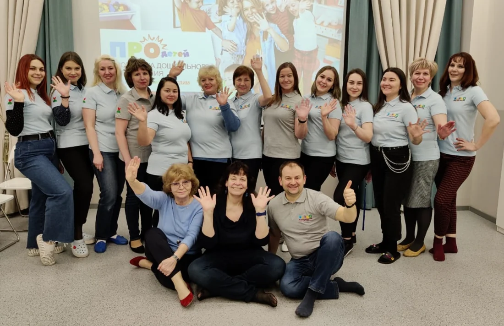
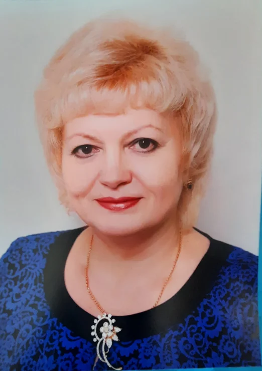
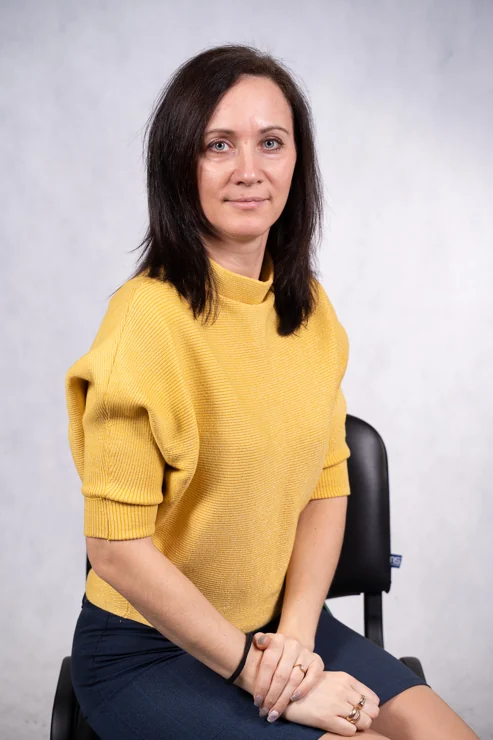
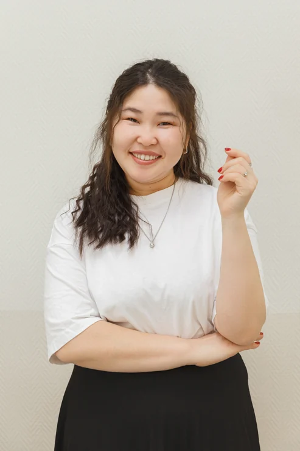
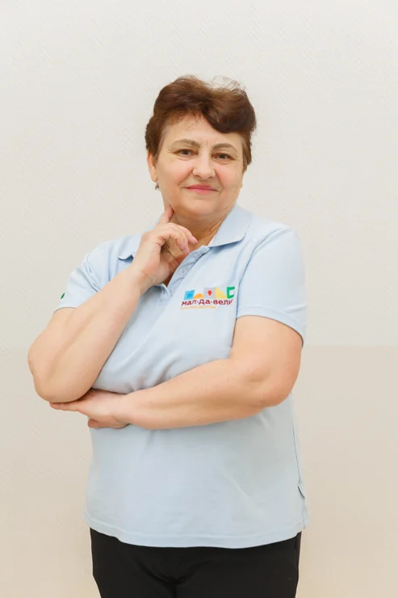
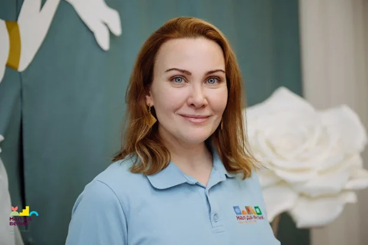
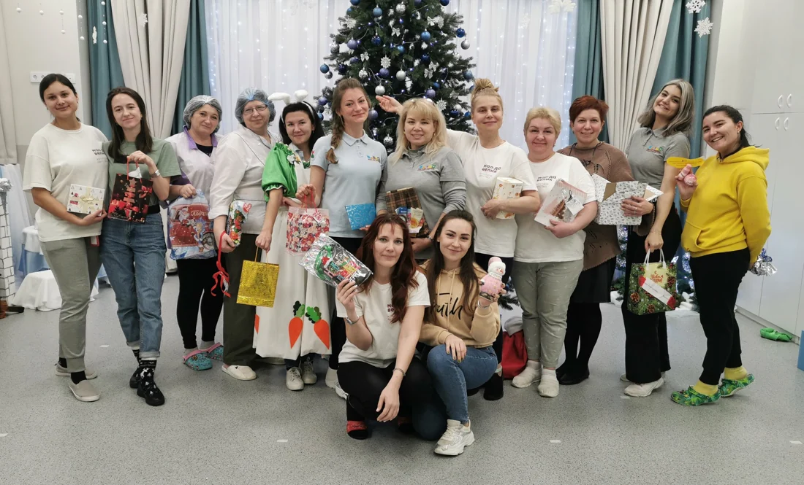
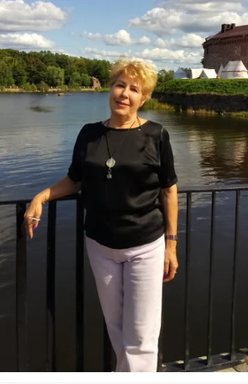
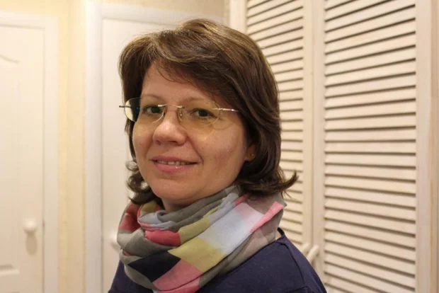

Управляющая
Лилия Блинова
Координирует работу сада и помогает семьям с организационными вопросами.
Воспитатели и специалисты
Кто встречает детей утром, ведёт занятия и помогает им освоиться в саду. Здесь можно познакомиться с командой каждого филиала.

Воспитатели, музыкальный руководитель и педагог-психолог.
Управляющая
Координирует работу сада и помогает семьям с организационными вопросами.

Воспитатель
Работает в саду с его открытия. Придумывает занятия, на которых дети могут исследовать и пробовать новое.

Воспитатель
Поддерживает интересы детей и помогает осваивать новые навыки в игре.

Воспитатель
Использует центры активности программы «ПРОдетей». Помогает детям самим выбирать задачи и работать вместе.

Воспитатель
Помогает детям выстраивать отношения в группе, договариваться и дружить.

Музыкальный руководитель
Знакомит детей с музыкой через ритм, движение и игры.
Педагог-психолог
Помогает детям привыкнуть к саду и поддерживает родителей в период адаптации.
В группе ребёнка встречают воспитатели. Занятия в саду также ведут специалисты по речи и английскому языку, а программу сопровождает методист.

Сотрудники сада в Калининском районе Санкт-Петербурга.

Администратор
К ней можно обратиться с вопросами о саде и посещении.

Воспитатель
Работает с дошкольниками в саду на Кондратьевском проспекте.